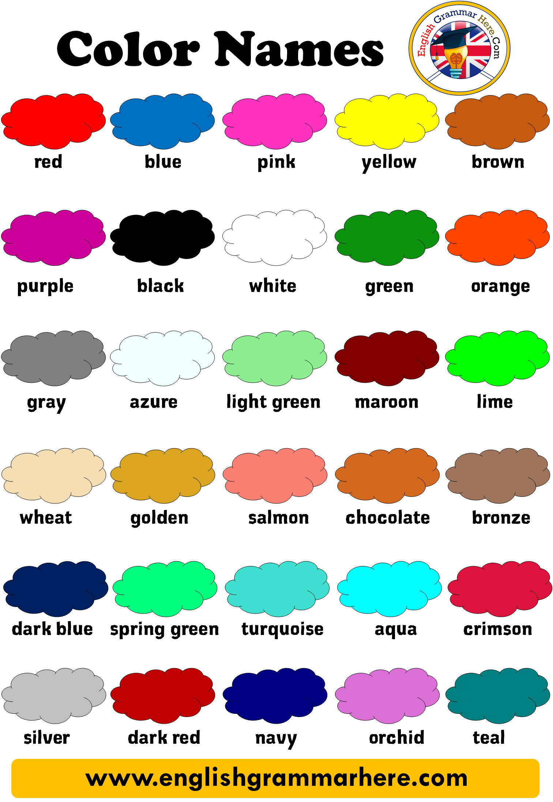

 Click to listen
Click to listen
Click to listen
| red | vermelho | blue | azul |
| pink | rosa | yellow | amarelo |
| brown | castanho / marrom | purple | roxo |
| black | preto | white | branco |
| green | verde | orange | laranja |
| gray | cinza | azure | azul |
| light green | verde claro | maroon | castanho avermelhado |
| lime | verde limão | wheat | trigo |
| gold | ouro | chocolate | chocolate |
| bronze | bronze | dark blue | azul escuro |
| spring green | Primavera verde | turquoise | turquês |
| squa | aqua | crimson | carmesim |
| silver | prata | dark red | vermelho escuro |
| navy | marinho | orchild | orquídea |
| teal | cerceta |
1)
2)
3)
4)
5)
| zero | zero | one | um |
| two | dois | three | três |
| four | quatro | five | cinco |
| six | seis | seven | sete |
| eight | oito | nine | nove |
| ten | dez | eleven | onze |
| twelve | doze | thirteen | treze |
| fourteen | quatorze | fifteen | quinze |
| sixteen | dezesseis | seventeen | dezessete |
| eighteen | dezoito | nineteen | dezenove |
| twenty | vinte | twenty-one | vinte e um |
| thirty | trinta | forty | quarenta |
| fifty | cinquenta | sixty | sessenta |
| seventy | setenta | eighty | oitenta |
| ninety | noventa | one hundred | cem |
| one hundred and one | cento e um | one thousand | mil |
| one hundred thousand | cem mil | one million | um milhao |
1)
2)
3)
4)
5)
Click on the sentences to listen.
- 1. I will help you park your bike.
Vou ajudá-lo a estacionar a sua bicicleta. - 2. I will help you clean the house.
Vou ajudá-lo a limpar a casa. - 3. I will help you finish homework.
Vou ajudá-lo a terminar o dever de casa. - 4.I will help you stop drinking.
Vou ajudá-lo a parar de beber. - 5. I will help you speak in public.
Vou ajudá-lo a falar em público. - 6. She was busy thinking.
Ela estava ocupada pensando. - 7. He was busy studying.
Ele estava ocupado estudando. - 8. I was busy cooking all night.
Fiquei ocupado cozinhando a noite toda. - 9. He was busy talking to his wife.
Ele estava ocupado conversando com sua esposa. - 10. I was busy cleaning my car.
Eu estava ocupado limpando meu carro. - 11. I was so interested in the game that I played it several times.
Fiquei tão interessado no jogo que joguei várias vezes. - 12. It’s so hot that I want to go to the beach.
Está tão quente que quero ir à praia. - 13. He speaks English so well that he got a promotion.
Ele fala inglês tão bem que foi promovido. - 14. It is so cold that I need a coat.
Está tão frio que preciso de um casaco. - 15. He runs so quikly.
Ele corre tão rápido. - 16. He is not only handsome but also patient.
Ele não é apenas bonito, mas também paciente. - 17. He is not only a good teacher but also a great speaker.
Ele não é apenas um bom professor, mas também um grande orador. - 18. I´m not only going to the church I´m also going tp preach.
Não vou apenas à igreja, também vou pregar. - 19. Not only yours but Jane´s as well.
Não só o seu, mas o de Jane também. - 20. The moto not only is economical but also feels good to drive.
A moto não só é económico como também é agradável de conduzir.
Click on the colored words to listen.
-
Grow up
- (become an adult) - crescer
I grew up in a small city.
Eu cresci em uma cidade pequena. -
Hand over
- (give something) - dar ou entregar algo
Please, hang over your cell phones now.
Por favor, pendure seus telefones celulares agora. -
Keep something from
- (not tell, hide) - não contar algo, esconder
It’s wrong to keep our secret from them.
É errado manter nosso segredo deles.